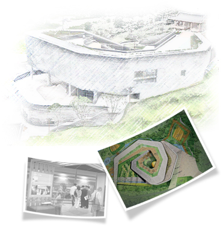

은평역사한옥박물관 홈페이지를 찾아주신 여러분을 진심으로 환영합니다.

우리 은평역사한옥박물관은 2014년 10월 개관하여, 그동안 구민들의 관심 속에서 다양한 기획전시와 체험, 교육 활동을 통하여 은평구 내 명실상부한 명소로 자리잡았습니다.
북한산 일대가 '한문화특구'로 지정받음으로써, 은평역사한옥박물관은 은평한옥마을, 천년고찰 진관사와 삼천사, 북한산 둘레길 등과 더불어 우리 전통문화와 자연을 함께 즐길 수 있는 문화마당의 역할을 하고 있습니다.
앞으로도 다양한 체험과 볼거리를 제공하고, 구민들이 마음 편히 쉴 수 있는 공간을 가꾸어 생활문화의 사랑방이 되기를 바라며, 우리 구민들의 사랑과 관심 속에서 더욱 발전하기를 기원합니다. 고맙습니다.